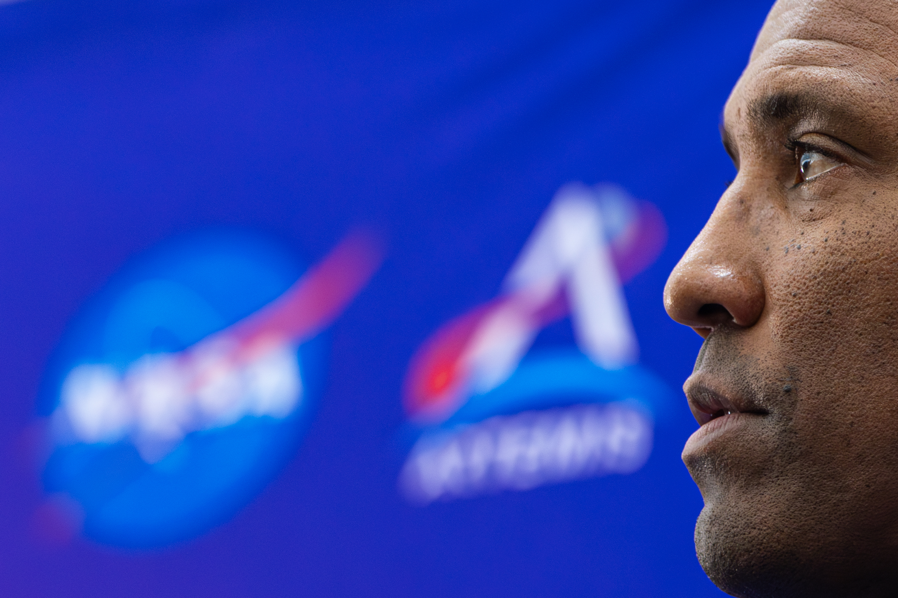

How much are eyeballs really worth?
Despite the short window for lunar observations on Artemis II, NASA came up with 10 science
objectives for the crew to pursue from the cockpit of Integrity. NASA selected a team of
scientists to compile a list of things for the Artemis II crew to look for on and above the
Moon, gave the astronauts a crash course in geology, and took them on field trips to Iceland,
Canada, and the American Southwest for hands-on field experience.
So what can a few hours of peering out the window from 4,000 miles away really tell us about the
Moon? A little, but not a lot.
“I think the biggest value here is the PR,” said Clive Neal, a planetary geologist at the
University of Notre Dame. “I mean, it’s getting the public excited. At our launch party, I had
one of my grandkids, and one of my great-grandkids there as well, and the excitement just in
there was palpable. Palpable. I’m having a flashback to the ’60s now.”
The Moon has no meaningful atmosphere, and its surface is frozen in geologic time. The only
notable changes happen when something strikes the Moon from space. Little has changed since the
Apollo astronauts last left the Moon in 1972, and in any case, NASA and international space
agencies have kept a close watch ever since.
Every 10 years, the National Academies convene a panel of planetary scientists to set priorities
for Solar System exploration. These decadal surveys help NASA decide where to send missions and
what scientific questions they should seek to answer. None of the results from Artemis II are
likely to answer these big questions.
“Is there going to be decadal-level science out of Artemis II? Probably not,” Neal told Ars in
an interview this week. “This is a technology demonstration mission… This is primarily to have a
crew there to check out the engineering and make sure that things are working.”

Artemis II Pilot Victor Glover gazes at the press gallery during a surprise press conference at
Kennedy Space Center on July 30, 2025. (Austin DeSisto)
From a scientific perspective, what’s most intriguing about Artemis II is figuring out how to
incorporate humans into planetary exploration. For more than 50 years, generations of scientists
have learned to explore other worlds only through the electronic eyes of robots. With NASA’s
return to the Moon, they must learn to take advantage of human observations.
This requires a shift in how ground teams design instruments, plan science campaigns, and select
targets for their observations. It also necessitates a change in culture. Astronauts on the
lunar surface or in lunar orbit will provide a real-time feedback loop for the army of
scientists looking over their shoulders from Earth. During the Apollo program, it took multiple
landings to fine-tune how this works.
Should we take a closer look at this rock? Should we go see that outcrop? Humans can make these
key decisions in seconds or minutes rather than days, weeks, months, or in some cases, years.
The experience of the Artemis II flyby also informed spacecraft engineers about the utility of
the Orion spacecraft as an observation platform and the optical quality of the capsule’s
windows. The astronauts reported some issues with glare from the Sun and the Earth. They
MacGyvered a makeshift window shroud using a T-shirt to help overcome the glare so they could
better see the lunar surface.
“We confirmed that we can achieve science through orbital observations and through integrating
science into flight operations,” said Kelsey Young, NASA’s science lead for the Artemis II
mission. Human eyes are remarkably good at sensing color gradients and brightness changes.
“Right away, they started describing the green around Aristarchus plateau and different brown
hues, and these colors really help tell us nuances about the chemistry of lunar material,” Young
said after the flyby.
Glover, Artemis II’s pilot, noted his perception of the Moon’s three-dimensionality during the
flyby: “You really get a sense that we’re flying over something with elevation and terrain.” The
astronauts were able to glimpse craters, mountains, and ridges at different angles as the Orion
capsule arced behind the Moon. “Every vantage point is different,” Young said.
Robots lead the way
Far below Artemis II, NASA’s Lunar Reconnaissance Orbiter was circling just 30 miles from the
lunar surface. LRO is perhaps the most advanced robotic spacecraft ever sent to the Moon. Since
2009, LRO has imaged the Moon with a black-and-white camera capable of resolving extraordinary
granular detail on the lunar surface. But the orbiter’s wide-angle multispectral camera is not
as sharp. Each Nikon camera flown on Artemis II, when paired with a 400mm lens, could
theoretically offer comparable resolution to LRO’s color imagery collected 100 times closer to
the surface.
“Our plan is never going to be [to] take better images than LRO. That’s impossible,” said Ariel
Deutsch, a member of NASA’s Artemis II science team, before the mission’s launch. “Our goal is
to instill and promote and maximize the human science that can be done on this mission as the
crew views the Moon and the lunar environment with human eyes for the first time in several
decades.”
Scientists also asked the astronauts to report their perception of color and tone on the night
side of the Moon, where only the muted hues of sunlight reflected off the Earth illuminate the
surface. “The only illumination source on the Moon will be Earthshine, which is a different
spectrum,” Deutsch said in a presentation last month at the Lunar and Planetary Science
Conference. “How does that affect the perception of color and tone?”
The crew members summarized their observations in periodic updates radioed down to Mission
Control on Monday. They also recorded more detailed verbal descriptions onboard the spacecraft
and were tasked with making drawings and annotations to go along with their photographs. This
data will come back to Earth when Orion returns Friday. “We tell the crew that their verbal
descriptions are actually going to be the monumental scientific dataset from this mission, and
that’s because, as humans, the crew provides critical perceptual context that just can’t be
replicated with robotic sensors,” Deutsch said. “The crew has perception and spatial awareness,
and they have the ability to react and to adapt to what they’re seeing in an instant.”
This quick perception allowed the astronauts to see several brief flashes of light, each lasting
a fraction of a second, on the dark side of the Moon. The flashes occurred as tiny fragments of
cosmic material, or micrometeoroids, impacted the lunar surface.
“It’s a pinprick of light,” Hansen said. “I would suspect there were a lot more of them… it is
just a momentary flash, no color, about the size of a star, and it really only lasts
milliseconds, a half a second at most.”
This was not surprising to Neal. “It’s a reminder that the surface is continually bombarded, and
this is something that we’ve tried to monitor,” he said.
Lunar impact flashes are routinely visible through telescopes on Earth. Astronomers were
watching the Moon as Artemis II made its close approach Monday, and if scientists can correlate
their own observations with those from the astronauts, they can get a better handle on how many
impacts are missed by ground-based telescopes. Constraining the number of impact events will be
important as engineers design shielding for a future Moon base.
“Impact flashes are caused by micrometeoroid impacts hitting the Moon, and they really help tell
us about the dynamic lunar environment, which is of course also important when we think about
future missions,” Young said.
Scouting for the future
Deep craters carved from the lunar crust by much larger, ancient impactors were also on the
target list for the Artemis II astronauts. Some of the craters have prominent rays emanating
from their center. The rays consist of material excavated from the Moon’s deep underground
during an asteroid or comet impact. The energy of the collision threw this material dozens or
hundreds of miles from the impact site.
Subtle color changes along the rays might provide hints of where future lander missions, with or
without crews, might investigate different eras of the Moon’s geologic history. One place on the
Moon that stood out to the Artemis II astronauts was Ohm crater, a nearly 40-mile-wide basin on
the lunar far side.
“It’s those kind of nuanced observations that could ultimately inform future landed missions,
future crewed missions, to understand where can we go to maximize the scientific value,” Young
said. “These ultimately get at chronology of the Solar System, at how the inner Solar System has
evolved over time, which connects to the Moon being the witness plate for our planet and for the
inner Solar System.”
Scientists believe the Moon formed about 4.5 billion years ago, just 65 million years after the
Solar System itself came into being, when a giant proto-planet collided with the proto-Earth.
“The crew observing things like they did with Ohm, where they can say, ‘With my eyes, I can see
this distinction,’ can ultimately tell us that future observations of high-priority landing
sites could tell us something similar,” Young said. “This is how we start to really bite away at
these really, really fundamental science questions of not just our understanding of the Moon but
also… Earth.”
This is all well and good. But the Artemis program’s most lasting scientific discoveries will
almost certainly only come when astronauts get down to the surface. That may happen in 2028,
depending on how fast SpaceX and Blue Origin can move forward with their commercial landers.
Neal said one of the big takeaways from Artemis II, apart from the performance of the Orion
spacecraft itself, will be to teach NASA how to make geology part of human spaceflight again.
The last Apollo landing mission in 1972 included astronaut Harrison “Jack” Schmitt, the only
professional geologist to travel to the Moon.
“We have much more productive science return with humans in the picture at the Moon than we do
with them out of the picture,” Neal said. “And we see that with the Apollo missions, the landed
missions.”
Observations from future missions orbiting closer to the Moon than Artemis II might also offer
some scientific return. There wasn’t much point, Neal said, in adding spectrometers or other
types of instruments to the Artemis II crew’s toolkit. They were simply too far away to make any
unique spectral measurements not already available in NASA’s archive.
Still, the views returned from Artemis II inspire awe.
“The big thing for me was reliving when I was a kid growing up, watching my Mum praying every
time they went behind the Moon,” Neal said. “I had a few flashbacks, but the big thing is
listening to the excitement of the science team. Kelsey Young, who was on the NASA broadcast,
just couldn’t stop smiling.”
“You might think that, after looking at hundreds of images taken of the lunar surface, I would
get sick of it,” Young said. “I have not, nor do I anticipate getting sick of it.”
“It was quite infectious,” Neal said. “The Earthrise image that they took is one for the ages.”